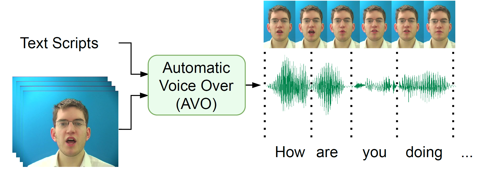
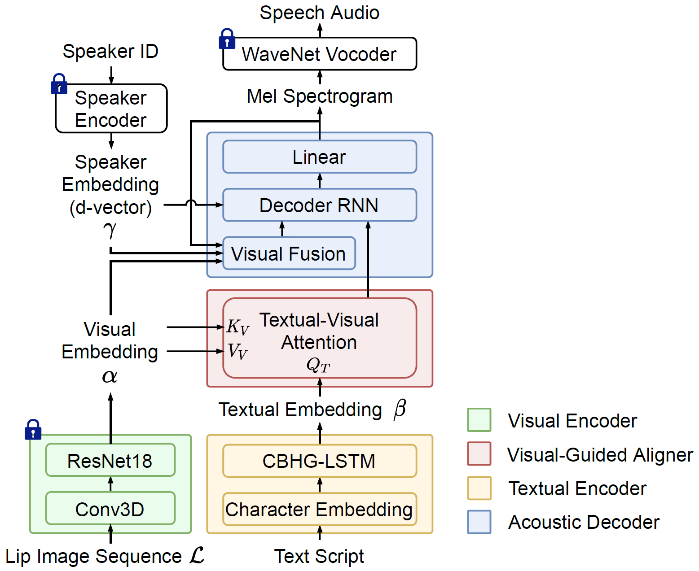

Abstract:
In this paper, we formulate a novel task of synthesizing human-like speech synchronized with a video clip of spoken utterance, denoted automatic voice over (AVO). Measuring lip-speech synchronization is an important indicator of the accuracy of duration alignment. A natural solution is to build a traditional text-to-speech (TTS) framework, which takes script as input to generate the synchronized speech. However, such models face performance limitation due to their ignorance of visual features, which can provide useful lip motion information. To this end, we propose a novel visual-enhanced TTS model, named VisualTTS, for accurate lip-speech synchronization. The proposed VisualTTS adopts two novel mechanisms that are 1) textual-visual attention, and 2) visual fusion strategy during acoustic decoding, which both contribute to forming accurate alignment between the input text content and lip motion in input lip image sequence. Experimental results show that VisualTTS achieves accurate lip-speech synchronization and outperforms all baseline systems.

Fig. 1: The typical workflow of automatic voice over: An AVO framework takes lip image sequence and text script as input, and generates speech audio in sync with video.
Fig. 1: The typical workflow of automatic voice over: An AVO framework takes lip image sequence and text script as input, and generates speech audio in sync with video.

Fig. 2: Model architecture of the proposed VisualTTS, that consists of a visual encoder, a textual encoder, a visual-guided aligner and an acoustic decoder. Pre-trained blocks are denoted with a lock.
Fig. 2: Model architecture of the proposed VisualTTS, that consists of a visual encoder, a textual encoder, a visual-guided aligner and an acoustic decoder. Pre-trained blocks are denoted with a lock.